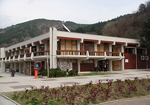

Младежки дом - Благоевград
Над 40 години Младежки дом – Благоевград се утвърждава като образователен, възпитателен, културен и информационен център, работещ за интересите на младите хора от община Благоевград. Институцията е общинска структура и подпомага изпълнението на Програмата за децата на община Благоевград. В Младежки дом - Благоевград се осъществяват редица дейности. Основните приоритети са свързани с възпитанието и образованието на подрастващите; активизиране на тяхното участие в извънучилищни форми на обучение и реагиране на изискванията на съвремието в посока създаване на модерно гражданско общество. Младежкият дом си сътрудничи с редица държавни, общински и неправителствени структури и организации: МОМН,Министерство на културата, Държавната агенция за закрила на детето, Регионална здравна инспекция, БЧК, младежки домове и културно-информационните центрове от страната. От 2001 година Националният Детски парламент има своя структура на територията на Благоевград. Дейността му е част от образователната програма на Младежкия дом. Звеното е едно от първите в България и работи в посока ангажираност на подрастващите към наболелите проблеми. Структурата заема своето място в обществения и социален живот на общината. Младежки дом – Благоевград оказва специализирана методическа помощ в извънучилищната и културно-развлекателната дейност на учебните заведения на територията на общината.